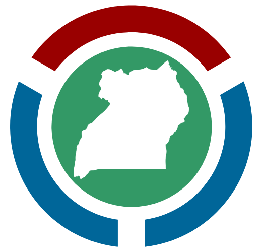

Uganda Wikimedia Atlas
Dashboards
Editathon
Wikimedia Community User Group Uganda
Uganda
Mega
Editathon
Adding images to Wikipedia, Wikidata and Commons for Uganda.
Connecting…
Leaderboard
Progress
Live edits
Task lists
How it works